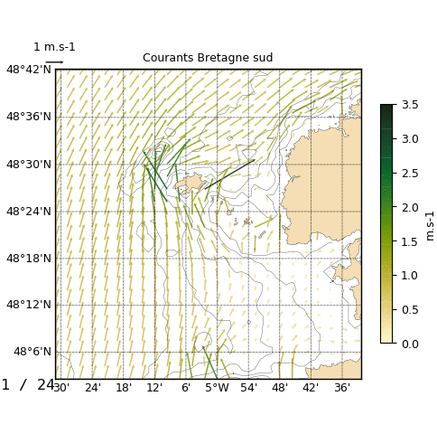

1.3.3.5.3.4. Animation de courants¶
Voir : map2().

Animation de courants en gif animé.
# Read
import cdms2, MV2
from vacumm.config import data_sample
f=cdms2.open(data_sample('mars2d.xyt.nc'))
u = f('u')
v = f('v')
h0=f('h0')
f.close()
mod = MV2.sqrt(u**2+v**2)
# Plots
from matplotlib import rc ; rc('font', size=9)
from vacumm.misc.plot import map2 as map, savefigs, make_movie
from vacumm.misc import auto_scale
import gc, pylab as P
m=None
levels = auto_scale(mod,nmax=10, vmin=0.)
nt = len(u)
for it in xrange(nt):
print it
# Bathymetry
m=map(h0, show=False, close=False, nofill=True, linewidth=.3,
proj='merc', fmt='%i m', m=m, contour_colors='#555555', )
# Currents
map((u[it], v[it]), m=m, nofill=True,
quiverkey_value=1,
quiver_scale=.05,
quiver_units='dots',
quiver_scale_units='dots',
quiver_norm=3, contour=False, quiver_linewidth=0.5, quiver_alpha=.9,
quiver_width=1.5, quiver_headwidth=2.5, quiver_headlength=2.5,
quiver_headaxislength=2, show=False, levels=levels,
colorbar_shrink=.7, right=1, quiver_samp=2,
figsize=(6, 4.5), proj='merc', title='Courants Bretagne sud')
# Progress
P.text(.98*m.xmax, .98*m.ymax, '%i / %i'%(it+1, nt), ha='right', va='top',
zorder=200, size=12, family='monospace')
# Save
P.savefig('quiver%02i.png'%it)
if it==0: savefigs(__file__[:-3]+'_png.png')
P.close()
gc.collect()
# Animations
outbase=__file__[:-3].replace('.', '-')
# - gif anime
make_movie('quiver*.png', outbase+'.gif')
# - video compatible windows
#make_movie('quiver*.png', outbase+'_mpg.mpg', clean=True)
print 'Done'